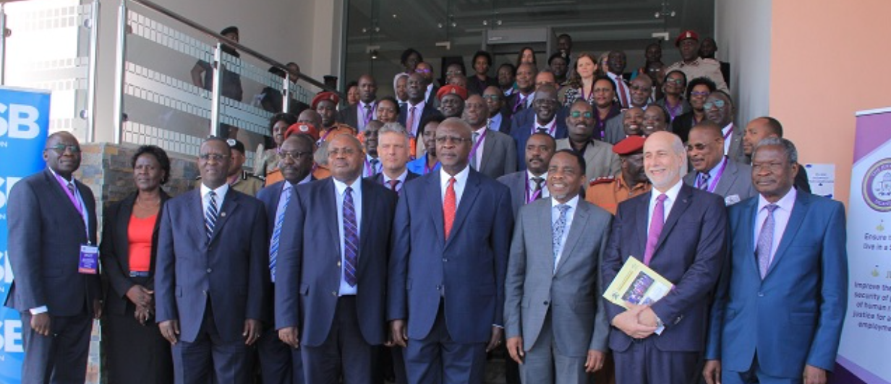

The conflicts in Northern, Eastern, and Rwenzori sub-regions led to marked lawlessness and limited access to justice, as formal administrative and enforcement mechanisms of the justice, law, and order sector were strained. The sub-regions still bear vivid scars of the conflicts, with a considerable number of victims who continue to seek acknowledgement, accountability, and redress.
While the Sector acknowledges Government initiatives to address conflict and its effects, significant shortfalls have been experienced, creating a need for a holistic and comprehensive approach to institutionalise these initiatives and address the current gaps and lingering effects of conflict on Uganda's citizens. In SDP IV, the Sector's focus on Transitional Justice was on enabling institutions and structures within and outside the Sector to implement transitional justice mechanisms.
Uganda's transitional justice programme addresses the legacy of conflict across three primary sub-regions, each with distinct histories and continuing needs.
The epicentre of the Lord's Resistance Army conflict, Northern Uganda experienced prolonged displacement, abductions, and atrocities. JLOS supports truth-telling, accountability, reparations, and reintegration of former combatants in the region.
Conflict and cattle rustling affected communities in Eastern Uganda, straining access to justice and law enforcement. Transitional justice mechanisms here focus on community reconciliation, land dispute resolution, and restoring trust in formal justice institutions.
Inter-communal conflicts in the Rwenzori sub-region have left residual tensions and unresolved grievances. JLOS supports local reconciliation initiatives, documentation of violations, and the strengthening of community justice structures to prevent relapse.
Documenting atrocities and supporting survivor testimonies to create an accurate historical record of conflict-era violations, providing the foundation for acknowledgement, reparations, and non-recurrence guarantees.
Pursuing accountability for serious crimes through both formal prosecution mechanisms and traditional/customary justice processes, balancing retributive and restorative approaches in affected communities.
Facilitating community reconciliation through traditional and formal justice mechanisms, enabling dialogue between former combatants, victims, and communities to rebuild social cohesion and prevent recurring violence.
Supporting the Amnesty Commission to reintegrate former combatants into their communities through structured social, economic, and psychological support programmes that reduce the risk of re-radicalisation.
Transitional justice requires long-term commitment and multi-stakeholder collaboration. JLOS welcomes partnerships with peacebuilding organisations, survivor groups, research institutions, and development partners to advance truth, accountability, and reconciliation in post-conflict communities.
Contact the Secretariat →